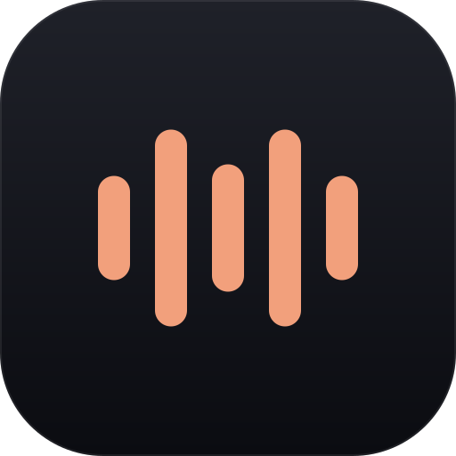
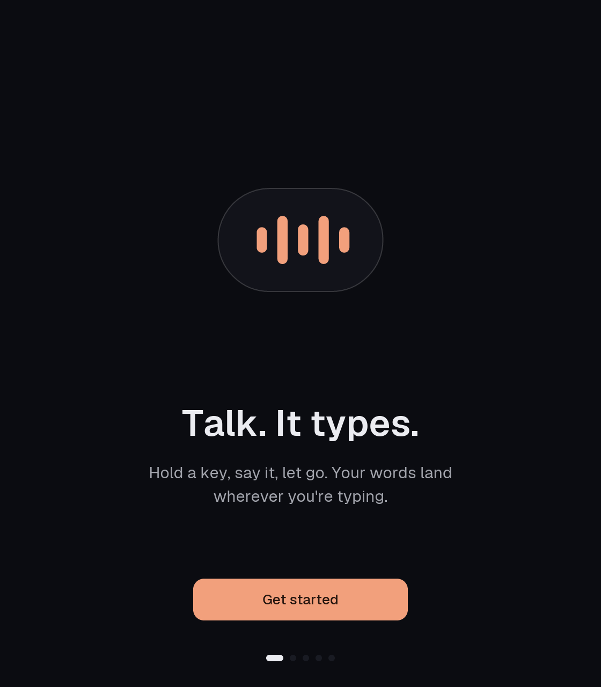
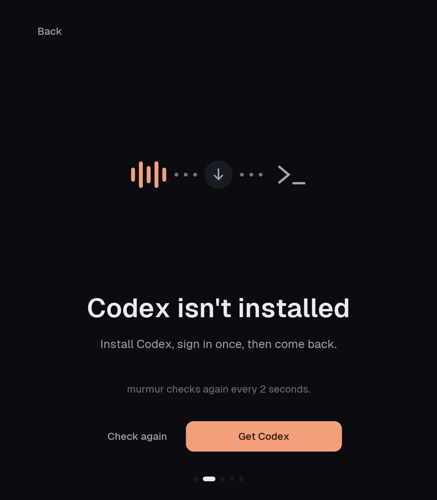
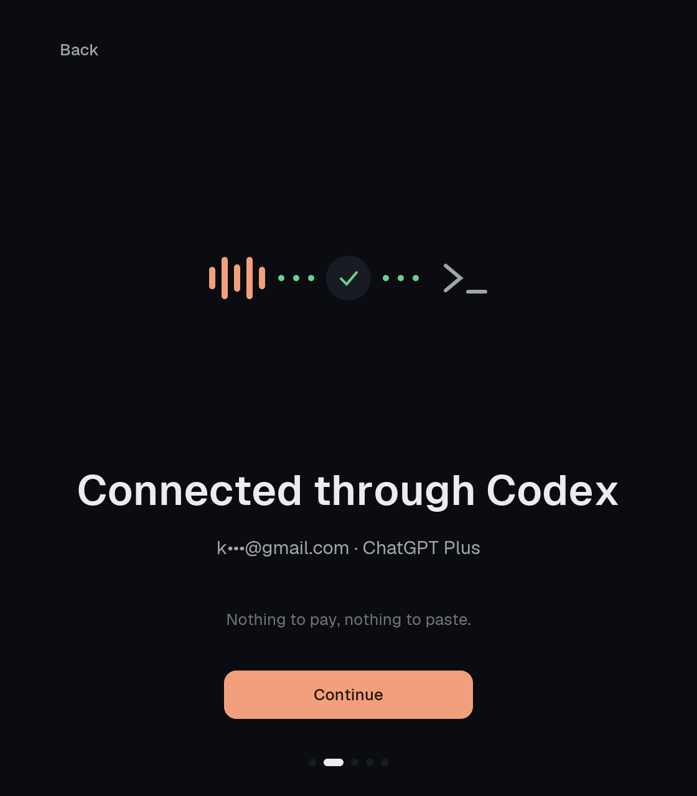
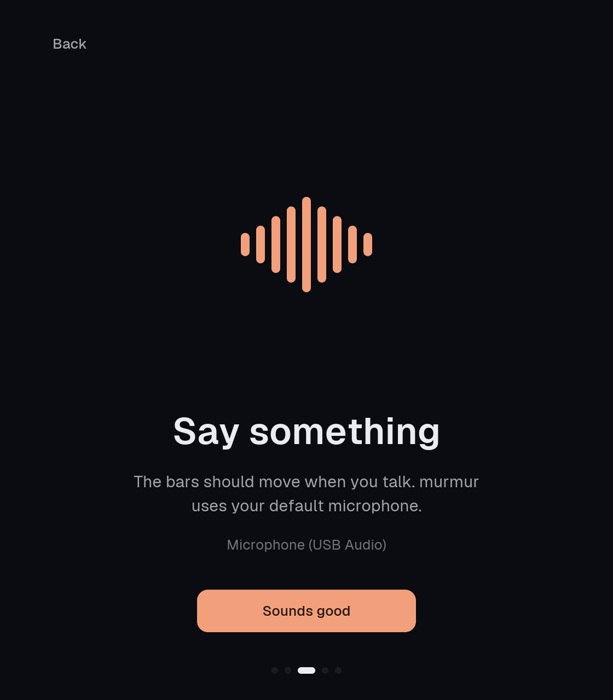
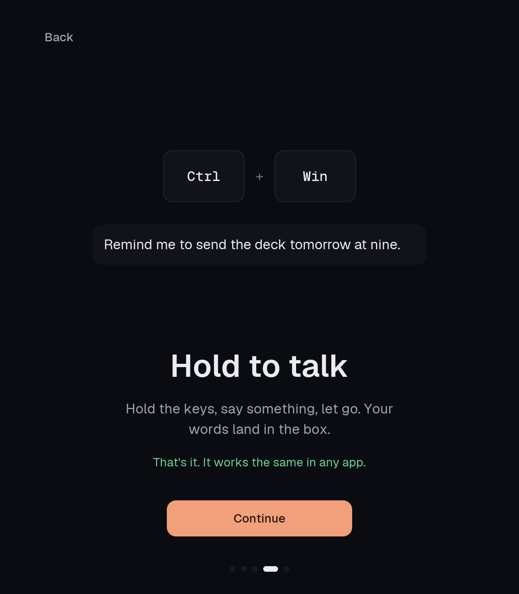
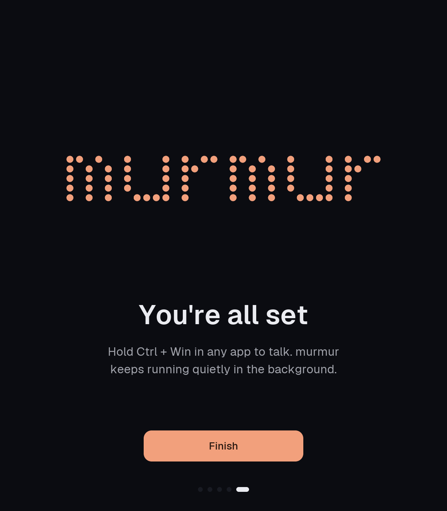

A murmuration is thousands of starlings moving as one shape at dusk. murmur turns a stream of speech into text that lands where you're typing. Dusk palette, one liquid surface, quiet until you speak.
Liquid, quiet, instant. Expressive only once.
The pill gets used dozens of times a day, so it moves fast, never bounces, and draws nothing while idle. Onboarding happens once, so that's where the springs, the flock and the celebration go.
The listening pill, frozen
Five bars whose heights trace a lowercase m. The app icon puts them on a dusk tile; the mark puts them in the pill; at 16px and below, the bars stand alone. Files: docs/brand/logo/.

Dusk neutrals, one peach
Neutrals do the work. Peach means "you are being heard" and marks the one primary action per screen. Green, amber and red only when they mean something.
Geist and Geist Mono, five sizes
Three springs, named, used everywhere
Bounce has to be earned. Opacity and color always use a 150ms tween. Click a track to retarget mid-flight: springs keep their velocity.
Pill states, toggles.
0.25s · bounce 0Windows, onboarding steps.
0.4s · bounce 0Onboarding finish, first dictation. Nothing else.
0.5s · bounce 0.3One liquid surface over every app
Bottom centre, never takes focus. It grows out of its resting sliver, turns into the thinking wave, and expands into errors instead of spawning toasts. Shown over a bright page with a photo, the hardest background for a dark pill to stay quiet on.
Q3 planning notes
Ship the beta to the first hundred testers, then decide on pricing.
Five steps, one borderless window, played once
560 x 640, no title bar (drag anywhere, Alt+F4 closes). Each step slides 24px on spring.default and the dots slide with it. These are the real screens, rendered by the app's own views: cargo test -p murmur brand_board -- --ignored regenerates them.






Quiet cues, synthesized, one switch
They confirm what you already see. Gain 0.04 to 0.08. Nothing on paste, hover or typing.